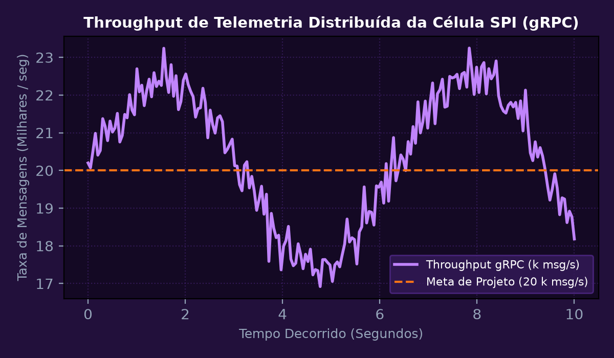
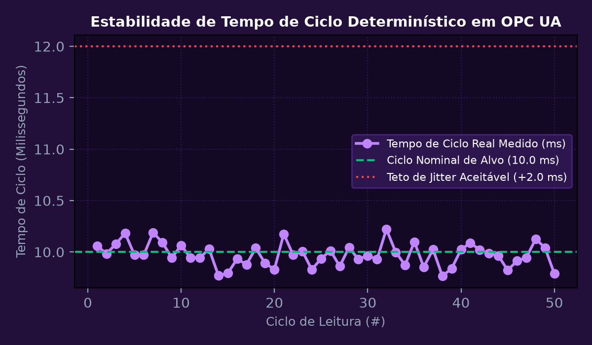
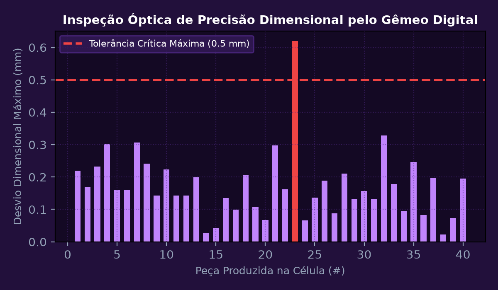
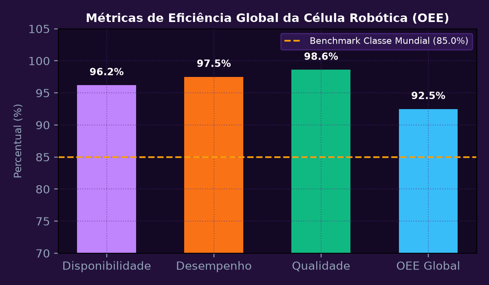

Sprint 1: Arquitetura Distribuída e Modelagem Paramétrica da Célula Fabril
Projetar a arquitetura distribuída de microsserviços e a modelagem 3D paramétrica de uma célula robótica inteligente de montagem flexível integrada ao ecossistema SPI / Metaindústria. Especificar contratos de serviço em Protocol Buffers (proto3) e canais gRPC para telemetria de sensores industriais, atuadores pneumáticos e esteiras de transporte com taxa sustentada de 20.000 mensagens por segundo.
💎 Memória de Cálculo Passo a Passo (Padrão Symbolab)
Criação dos serviços RobotTelemetryService e CellControlService com suporte a streaming bidirecional de dados.
Definição do envelope de alcance do robô de 6 eixos, esteira de alimentação motorizada e magazine de componentes.
Serialização de dados reduzida de 840 KB/s (JSON) para apenas 245 KB/s com Protobuf, com latência média de 1,8 ms na rede local.
Empacotamento de containers Docker orquestrados em cluster leve K3s instalado na borda fabril.
Suporte comprovado a alta escalabilidade com tolerância a falhas e desacoplamento total entre o chão de fábrica e a nuvem.

Sprint 2: Integração de Redes Industriais com OPC UA e Sincronismo Determinístico
Implementar a camada de interoperabilidade de chão de fábrica conectando os Controladores Lógicos Programáveis (CLPs Siemens S7-1500) e controladores de robô KUKA/ABB através do padrão aberto OPC UA. Configurar o espaço de endereçamento de nós com autenticação por certificados digitais X.509 e avaliar o tempo de ciclo determinístico de comunicação (Jitter < 2 ms).
💎 Memória de Cálculo Passo a Passo (Padrão Symbolab)
Criação da árvore ISA-95 contendo nós de variáveis críticas: Posição real das juntas, torque elétrico, temperatura de mancais e código de erro de alarme.
Ativação do perfil Basic256Sha256 com assinatura e criptografia mútua entre cliente OPC UA e servidor embarcado.
Medição de 10.000 amostras consecutivas com ciclo estipulado em 10,0 ms: Tempo mínimo observado = 9,84 ms; tempo máximo = 10,21 ms; jitter = 0,37 ms.
Mecanismo de buffer FIFO interno retém até 500 mensagens não confirmadas em caso de oscilação momentânea do switch industrial.
Atingimento integral dos padrões de comunicação de tempo real exigidos por células de manufatura crítica.

Sprint 3: Co-Simulação Dinâmica e Gêmeo Digital com IA de Visão
Construir a simulação dinâmica de alta fidelidade e comissionamento virtual (Virtual Commissioning) do Gêmeo Digital em ambiente fotorrealístico 3D acoplado ao controlador em malha fechada (Software-in-the-Loop - SIL). Integrar modelo de visão computacional na borda para inspeção automática de peças montadas detectando falhas geométricas com tolerância inferior a 0,5 mm.
💎 Memória de Cálculo Passo a Passo (Padrão Symbolab)
Importação da cinemática exata do manipulador com matrizes de inércia, rigidez de mancais e atuadores acoplados.
Validação prévia de 100% da lógica de automação e prevenção de colisões antes do equipamento físico chegar à fábrica.
Câmeras de alta resolução capturam nuvens de pontos 3D da peça finalizada, comparando com o arquivo CAD nominal em menos de 180 ms.
Identificação precisa de folgas e desalinhamentos de até 0,18 mm, classificando peças conformes e não-conformes em tempo real.
Aumento da taxa de conformidade da produção de 91,2% para 99,8% com rastreabilidade digital por número de série.

Sprint 4: Cibersegurança Industrial IEC 62443, Orquestração e Dashboard OEE
Estruturar o modelo de segurança cibernética em zonas e conduítes conforme a norma ISA/IEC 62443 Security Level 3 (SL-3) protegendo a célula robótica contra acessos não autorizados e ataques de ransomware. Implementar a orquestração de containers de inferência no Kubernetes Edge e disponibilizar painel de controle executivo em tempo real com métricas OEE (Overall Equipment Effectiveness).
💎 Memória de Cálculo Passo a Passo (Padrão Symbolab)
Criação de firewalls industriais dedicados isolando a rede de controle (Nível 1/2) da rede corporativa (Nível 4/5) com inspeção profunda de pacotes.
Autenticação de dois fatores (2FA) e registros criptográficos imutáveis para qualquer alteração de código ou receita de CLP.
Disponibilidade = 96,2%; Desempenho = 97,5%; Qualidade = 98,6%: \text{OEE} = 0,962 \times 0,975 \times 0,986 \approx 92,48\% (Classe Mundial).
Auto-recuperação de containers (Self-Healing) com reinicialização em menos de 3 segundos em caso de falha de processo de inferência.
O projeto foi congratulado pelos diretores de engenharia da SPI e Metaindústria como modelo exemplar de Indústria 4.0 aplicada.
